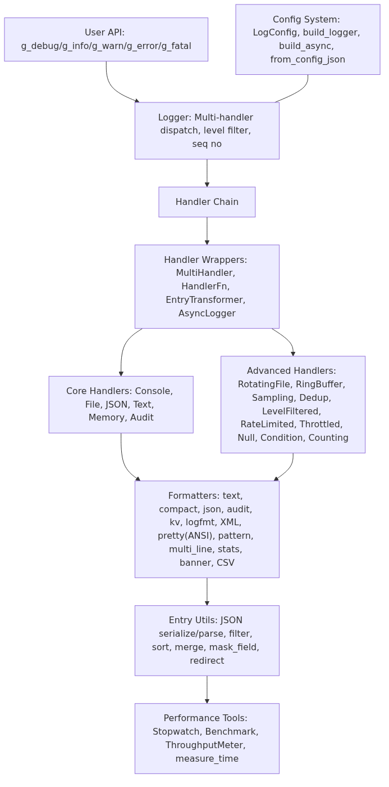

CCF 开源创新大赛 · MoonBit 赛道参赛作品 · 2026
moonbit-log 是一个基于 MoonBit 语言构建的高性能结构化日志库，支持多级别日志、 多种输出格式（JSON、Text、XML、Logfmt、CSV 等）、文件轮转、异步批处理、审计日志、 性能基准测试等特性。提供全局 Logger 便捷 API 和灵活的配置系统，适用于服务端、 嵌入式系统、数据分析等场景。

6 级日志级别：Debug / Info / Warn / Error / Fatal / Audit，支持 Show/Eq 和排序
结构化日志条目，含 Builder 模式、时间戳、线程 ID、序列号、字段 KV 存储
多 Handler 分发、级别过滤、序列号生成、级联 flush/close
Console / File / JSON / Text / Memory / Audit / RotatingFile / RingBuffer / Sampling / Dedup / RateLimited / Async / Throttled 等
text / compact / json / audit / logfmt / XML / pretty(ANSI) / pattern / multi_line / kv / banner / CSV / stats
LogConfig 配置系统、build_logger / build_async / build_multi 工厂方法、JSON 配置解析
JSON 序列化/反序列化、过滤、排序、合并、脱敏、字段变换
Stopwatch (μs/ms/s)、Benchmark (最值/均值)、ThroughputMeter、benchmark_compare
| 功能 | 代码 |
|---|---|
| 基本日志 | g_info("Server started") |
| 结构化日志 | g_info("User login", [("user_id", "42"), ("ip", "10.0.0.1")]) |
| JSON 输出 | init_default_json() |
| 审计日志 | AuditHandler::new(Debug, audit_formatter("|"), 100) |
| 文件轮转 | RotatingFileHandler::new("app.log", 5, 1048576, fmt) |
| 异步批处理 | AsyncLogger::new(handler, batch_size=64) |
| 性能基准 | let r = benchmark("func", 1000, fn() { ... }) |
| 配置系统 | configure(#!, level: Info, format: "json") |
| Handler | 输出 | 过滤 | 缓冲 | 轮转 | 采样 | 去重 | 限流 | 异步 |
|---|---|---|---|---|---|---|---|---|
| ConsoleHandler | stdout | - | - | - | - | - | - | - |
| FileHandler | 文件 | - | 行缓冲 | - | - | - | - | - |
| MemoryHandler | 内存 | - | - | - | - | - | - | - |
| AuditHandler | 内存 | 级别+字段 | - | - | - | - | - | - |
| RotatingFileHandler | 文件 | - | 行缓冲 | ✓ | - | - | - | - |
| RingBufferHandler | 内存 | - | 环形 | - | - | - | - | - |
| SamplingHandler | 包装 | - | - | - | ✓ | - | - | - |
| DedupHandler | 包装 | 消息去重 | - | - | - | ✓ | - | - |
| RateLimitedHandler | 包装 | 时间窗口 | - | - | - | - | ✓ | - |
| LevelFilteredHandler | 包装 | 级别范围 | - | - | - | - | - | - |
| AsyncLogger | 包装 | - | 批量队列 | - | - | - | - | ✓ |
| BatchingLogger | 包装 | - | 超时批 | - | - | - | - | ✓ |